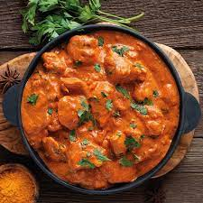

Butter Chicken
Ingredients
- Boneless-Chicken(500gm)
- Tomatoes(6-medium)
- Onions(5-medium)
- Butter
- Amul-Cream
- Kashmiri-Mirch
- Kasturi-Methi
- Honey
Recipe
- Boil chicken piece in lemon water
- Take out tomato pure and stire fry with onions and Ginger Garlic paste
- Cool it and grind it in mixer to make fine paste
- Add some butter to it and cook it for 5 min ,add some salt and cream
- Add Kashmiri-Mirch and Kasturi-Methi
- Now add boiled chicken along with some honey to give some sweet flavour to it
- Your butter chicken is now ready !! Serve it with chappatis

White Sause Pasta
Ingredients
- Pasta 250gm
- Milk
- Mayonnaise
- Butter
- Amul-Cream
- Cheese
- Chilli-flakes
- Honey and salt
Recipe
- Boil the Pasta for 5 min low flame
- odocnsondvonwrovnofnco ndonco
- sacksdncowornosdcod xosdonvovnofoo kkvfv ck
- Add some sdkcndonvosnondvosdno ovdvk fk
- psdmcopsdmo cheese it enodnond sknon
- Your Pasta is now ready !! Serve it

Poha
Ingredients
- Flattened rice 250gm
- Tomatoes(6-medium)
- Onions(5-medium)
- Butter
Recipe
- Take Flattened Rice and sink it in water for 5min
- Take out tomato pure and stire fry with onions and Ginger Garlic paste
- Cool it and grind it in mixer to make fine paste

Chole Bhature
Ingredients
- Chole channa 250gm
- Tomatoes(6-medium)
- Onions(5-medium)
- Butter
- Amul-Cream
Recipe
- Boil the channa
- Take out tomato pure and stire fry with onions and Ginger Garlic paste
- Cool it and grind it in mixer to make fine paste
- Add some butter to it and cook it for 5 min ,add some salt and cream